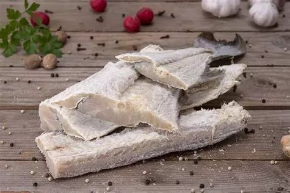
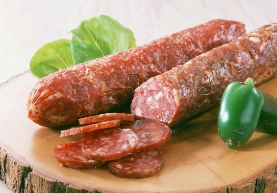
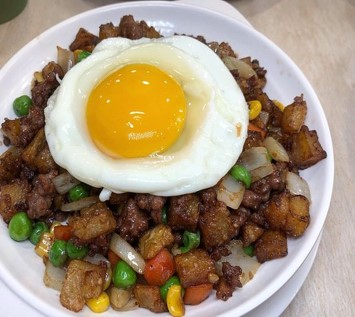
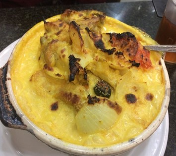
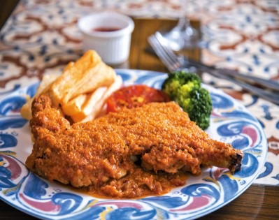
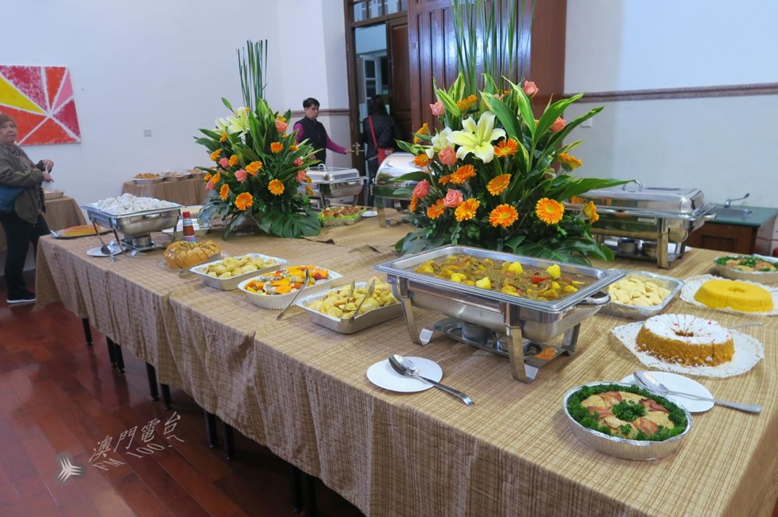

葡萄牙把其殖民地和航海時途經的地區的飲食文化融合 在16世紀初，葡萄牙人乘船遠赴澳門 定居澳門後，他們把自身的歐洲文化、不同地區的風俗、以及澳門華人的生活方式結合起來 中葡混血兒的數量日漸上升促進了中國飲食文化對土生葡人飲食文化的影響
土生葡人家庭的婦女會把家庭食譜世代相傳，有些食譜更成為家族的標誌 食譜通常只在家族內部流傳，少有對外公開，涉及土生菜食譜的書籍也不多 在2000年前後，大部分土生葡人改為鍾愛中菜和葡萄牙菜，幾乎不顧傳統土生葡菜 一些土生葡菜一度面臨失傳 土生菜由家庭食譜演變成廣泛流傳、受遊客青睞的經典澳門美食
烹調土生菜需時較長，也需要較多事前準備 烹飪技術中西合璧，包括煎、炒、煮、炸、燜、燉、焗、烤、蒸等 主要食材包括雞肉、豬肉、牛肉、馬鈴薯、米粉等 葡萄牙的食材：馬介休（醃製鱈魚）、葡萄牙紅豆、西式臘腸和葡萄牙黑水欖 土生菜注重保持食物的原汁原味，但會使用不同的佐料和香料
| 澳門土生葡菜 | 葡萄牙式烹調方法為基石，融合了多地的烹飪所長和飲食風俗 食譜一般只會在家族內部世代相傳 |
|---|---|
| 馬介休 |  |
| 西式臘腸 |  |
| 乾免治 |  |
| 葡國雞 |  |
| 非洲雞 |  |
| 肥茶 |  |